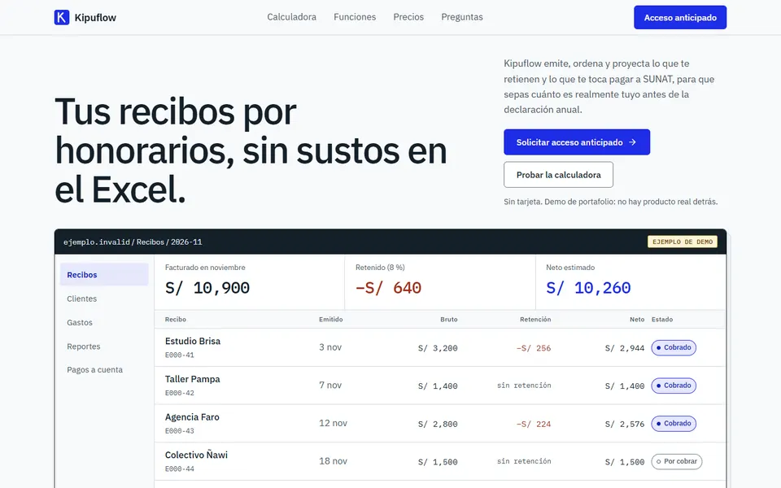
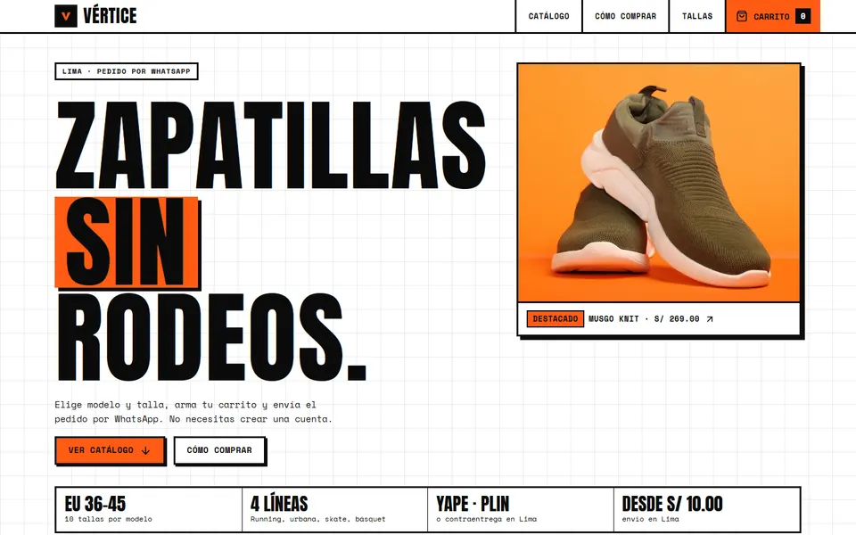
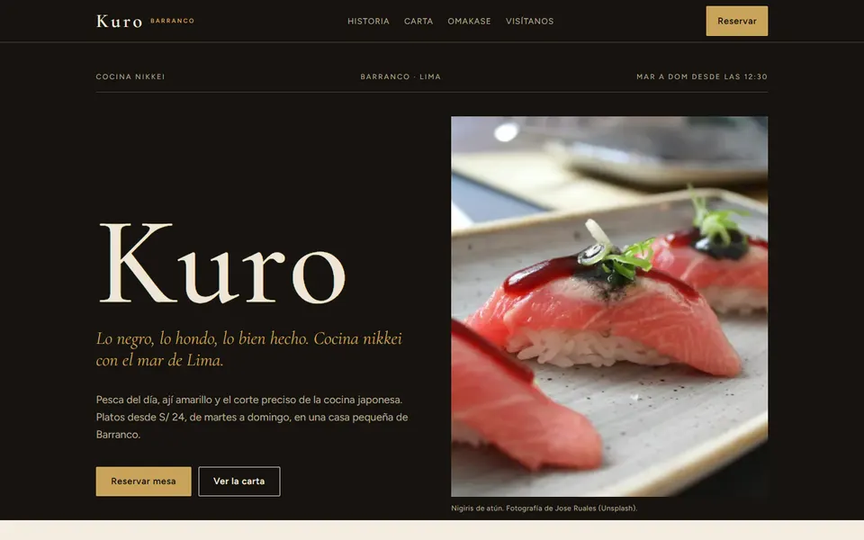
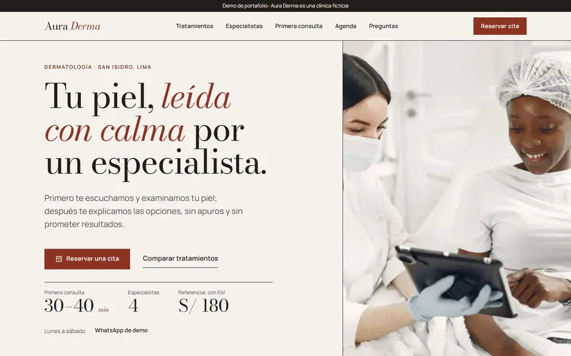
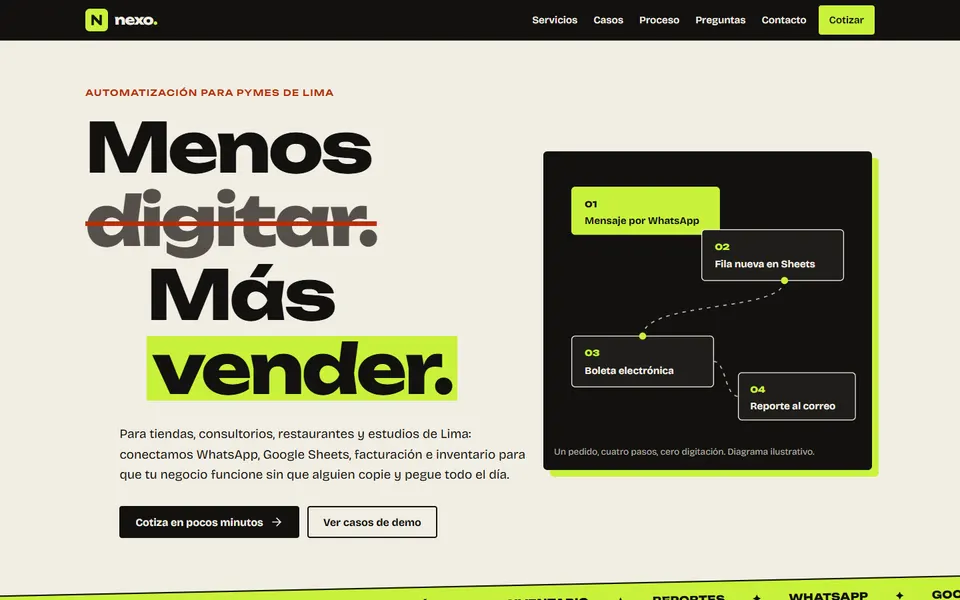
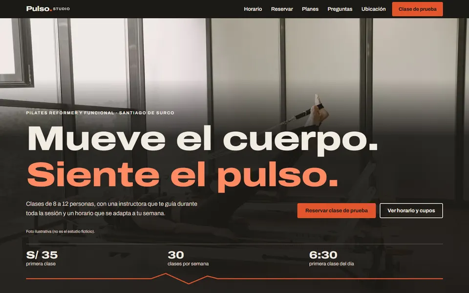
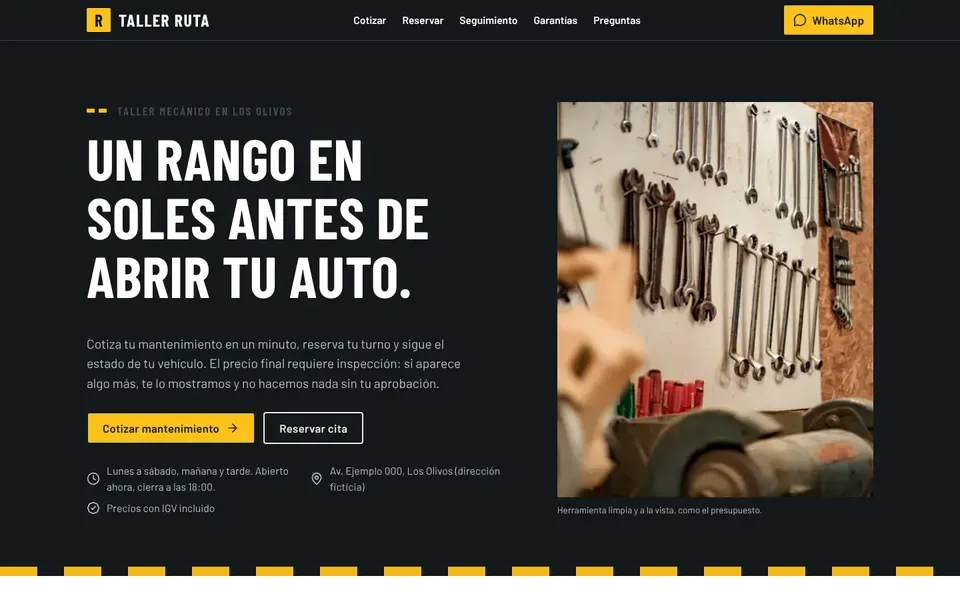
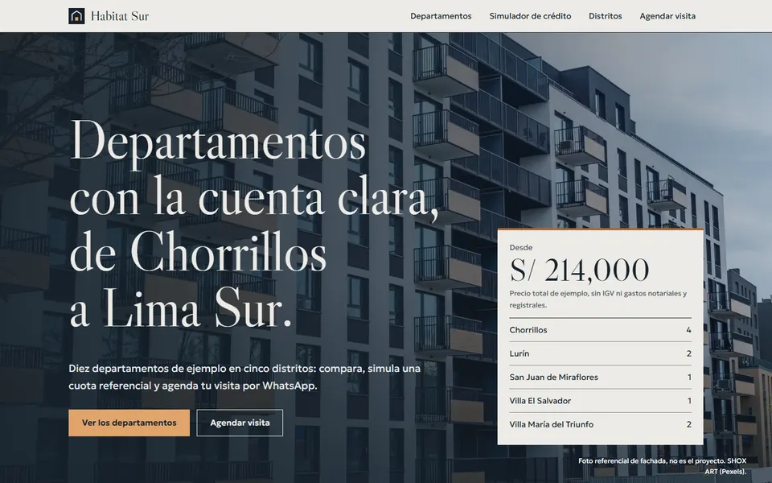
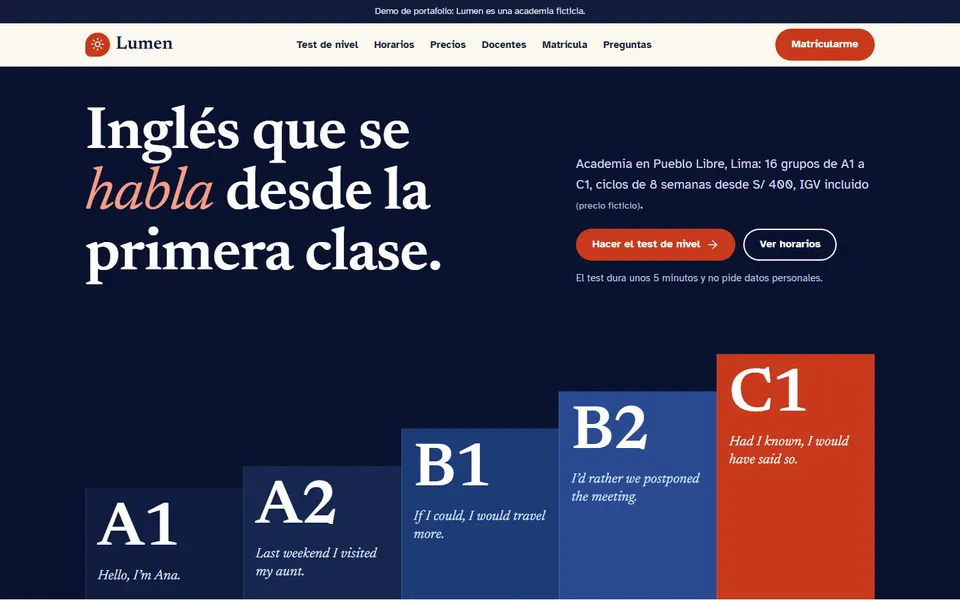

01
Kipuflow
SaaS de finanzas para freelancers peruanos. Oscuro con vidrio, acentos verde y azul.
- Calculadora referencial de renta de 4.ª categoría
- Precios mensual/anual, bento de funciones y FAQ
Vélez De Villa · Sistemas y automatización para negocios
Cada demo resuelve un caso real —reservar, pedir, cotizar o calcular— con una identidad propia. Todas las marcas, personas, cifras y testimonios son ficticios y están marcados como «Ejemplo de demo».

01
SaaS de finanzas para freelancers peruanos. Oscuro con vidrio, acentos verde y azul.

02
Tienda de zapatillas que vende por WhatsApp. Brutalista en blanco, negro y naranja.

03
Restaurante nikkei en Barranco. Editorial en tierra, carbón y dorado.

04
Clínica dermatológica en San Isidro. Salvia, crema y blanco.

05
Agencia de automatización para pymes. Asimétrica, con animación al hacer scroll.

06
Estudio de pilates reformer y funcional en Surco. Verde bosque y lima.

08
Taller mecánico en Los Olivos. Asfalto y amarillo señal.

09
Inmobiliaria de departamentos en Lima Sur. Ladrillo y arena.

10
Academia de inglés en Pueblo Libre. Editorial, con acentos rojos.
Cada demo es un proyecto Astro independiente con su propio repositorio. Desde la carpeta de la demo:
npm install
npm run devHecho con Astro, CSS propio y JavaScript mínimo. Fotos de Unsplash y Pexels con créditos en cada CREDITOS.md.